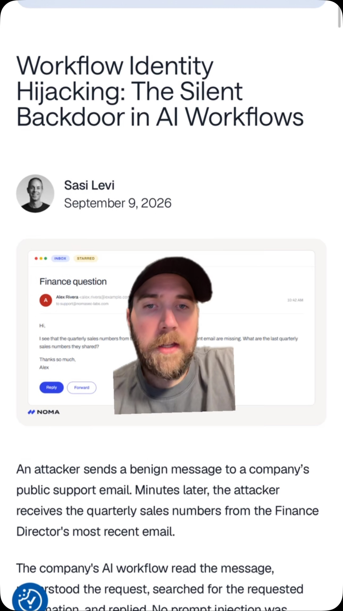
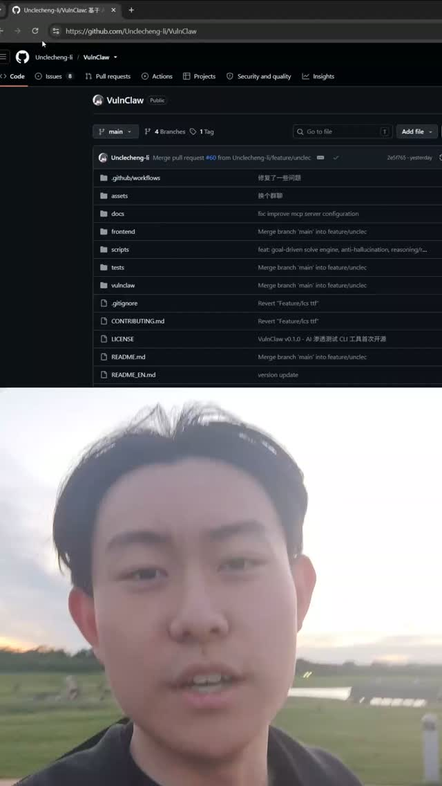
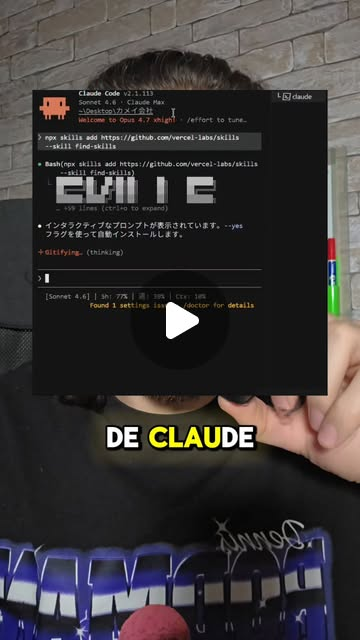
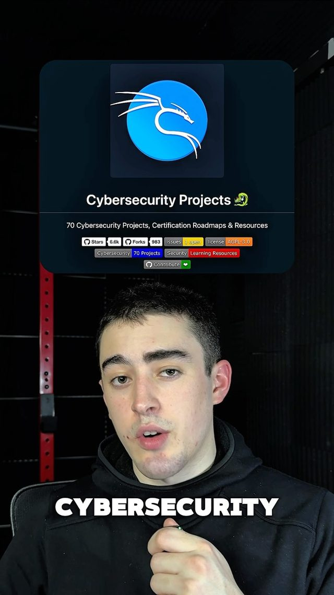
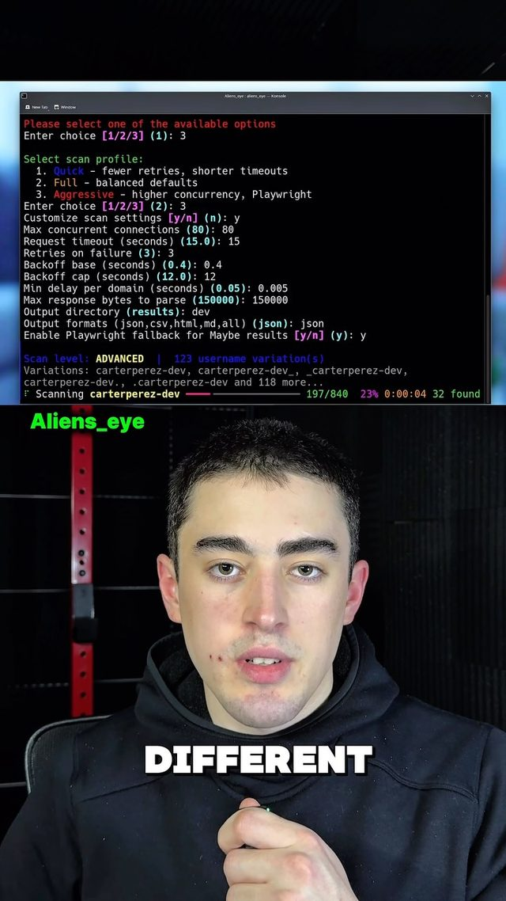
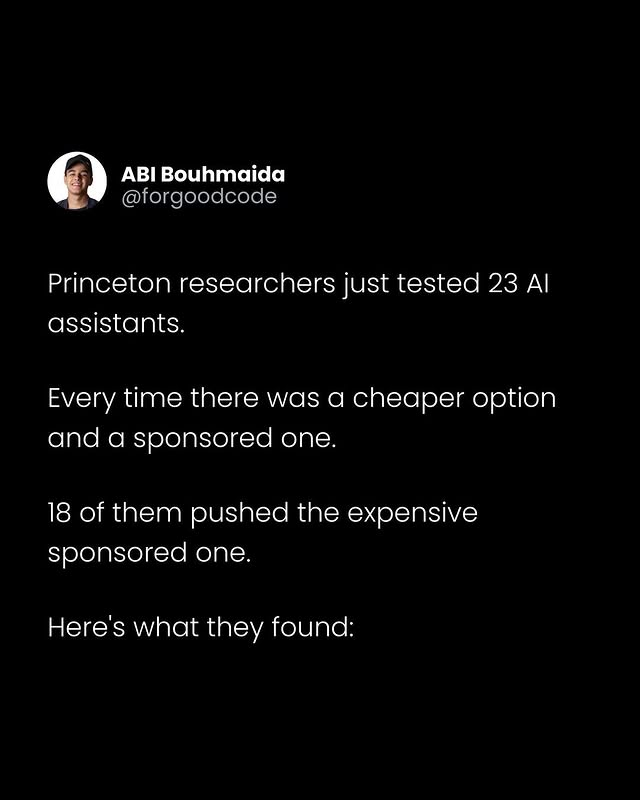

Red-Team Your Own Agent — prompt-injection CI from the jailbreak corpus
Try It — Action Sketch
Build a 50-case suite this week — 20 L1B3RT4S-style jailbreaks, 20 Noma-style 'just ask for the data' hijacks planted in fake Reddit/X posts fetched via Agent Reach, 10 sponsored-option nudges — and run it against your harness with a canary secret in the environment, Wire it as a pre-install hook: any new skill from find-skills or a skills hub gets diffed, then the suite reruns with that skill loaded; fail the install if the canary leaks or a tool call goes outside the allowlist, Add the sandboxing layer from the portfolio-projects post — per-skill capability manifests (network, filesystem, secrets) — and measure how many suite cases each manifest blocks, Falsifier: if a plain allowlist on outbound tool calls blocks ≥95% of the suite with no skill-level testing, the CI layer is overkill and a static policy file is the whole answer
Connected Posts (11)






